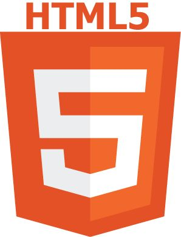

Je suis Kodjo Emmanuel EKLU, étudiant ingénieur en Master 1 des Technologies de l'Information pour la Santé à l'ESMT de Dakar, au Sénégal. En tant qu'infirmier diplômé d'État depuis 2021, je combine ma passion pour les soins infirmiers et la technologie pour innover dans le domaine de la santé numérique.
Spécialisé dans les soins à domicile et passionné par les outils digitaux, je développe des solutions telles que ScanSanté, une application mobile innovante intégrant un QR code unique pour une gestion rapide et sécurisée des données médicales.

Une solution mobile innovante visant à faciliter la collecte, l’accès et la gestion des informations médicales personnelles des utilisateurs. Elle repose sur un bracelet avec un QR code unique donnant un accès rapide et sécurisé aux données médicales essentielles.
Un projet visant à offrir une meilleure prise en charge des patients à domicile grâce à une plateforme en ligne connectant professionnels de santé et patients.
Découvrez les maquettes mobiles de ma solution ScanSanté, conçues pour révolutionner la gestion des données médicales.


Nous proposons des solutions innovantes pour transformer la gestion des données médicales et optimiser les systèmes de santé.
Création d'applications intuitives pour la gestion des données de santé, adaptées à vos besoins.
Utilisation des technologies d’intelligence artificielle pour l'analyse et l’interprétation des données médicales.
Accompagnement des professionnels de santé dans l’intégration des outils numériques dans leur pratique quotidienne.
Pour toute question ou collaboration, n'hésitez pas à nous contacter.